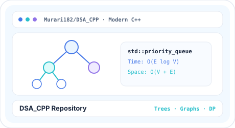

Every card below represents a verified repository or platform I have built or led. Hover
to experience 3D inertia tilt and specular light refraction, inspect live repository
activity in the SVG heatmap below, or open the interactive reader for architecture notes.
Dynamically visualizes recent development velocity across verified
@Murari182 repositories. Filter by engineering domain or hover any SVG
cell to inspect repository activity.
154 Contributions (Recent Window)
6 Verified Active Repos
Synced: @Murari182
Algorithmic Complexity Evaluation Studio & Custom C++ Benchmarking Library
A developer environment and C++ library engineered to inspect time complexity
behavior empirically and structurally. Uses the custom
TCAnalyzer C++ library to evaluate scaling performance across
algorithmic implementations and input distributions.
Powered by the custom TCAnalyzer C++ library for time-complexity diagnostics
Bridges asymptotic Big-O analysis with reproducible runtime instrumentation
Repository Link: [PLACEHOLDER: Add public BigO Studio repository URL]
Web Platforms·3 min read·CIO Role
CollegeConnects
Student-Focused College Counselling Platform
A student-focused college counselling and campus guidance platform where I serve as
Chief Information Officer (CIO), built with React, FastAPI, MongoDB, and Firebase.
Personalized Multi-Agent Study Companion (Study_Agent)
An intelligent multi-agent system designed to read PDFs, slides, and handwritten
notes, automatically generating flashcards, quizzes, and adaptive revision plans
based on student performance.
An interactive movie ticket and auditorium seat reservation platform featuring
visual seat matrix selection, showtime scheduling, and instant booking summaries.
Real-time auditorium seat selection matrix with clear state transitions
Repository Link: [PLACEHOLDER: Add public CineReserve repository URL]

Systems & C++·2 min read·Open Source Repo
DSA_CPP Repository
Data Structures & Algorithms Implementations in Modern C++
A personal repository documenting my journey of learning Data Structures and
Algorithms using C++. Includes implementations, problem-solving approaches, time and
space complexity analysis, notes, and practice problems.
Covers foundational to advanced algorithmic concepts with complexity analysis